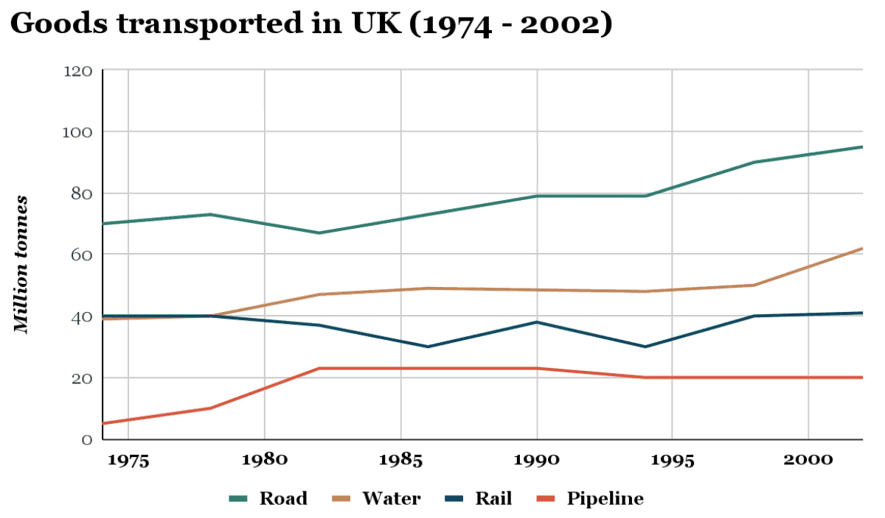

You should spend about 20 minutes on this task.
The graph below shows the quantities of goods transported in the UK between 1974 and 2002 by four different modes of transport.
Write at least 150 words.
You should spend about 40 minutes on this task.
In some countries, there are not enough medical or educational facilities in rural areas. Therefore, some people believe newly graduated teachers and doctors should be sent to work in rural areas for some time. Others think that people should be free to choose where they work after graduation. Discuss both views and give your opinion.
You should write at least 250 words